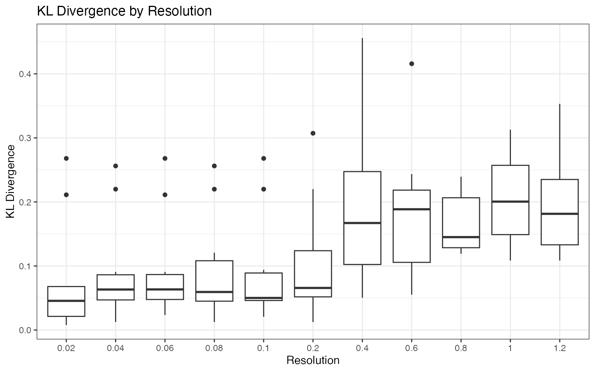
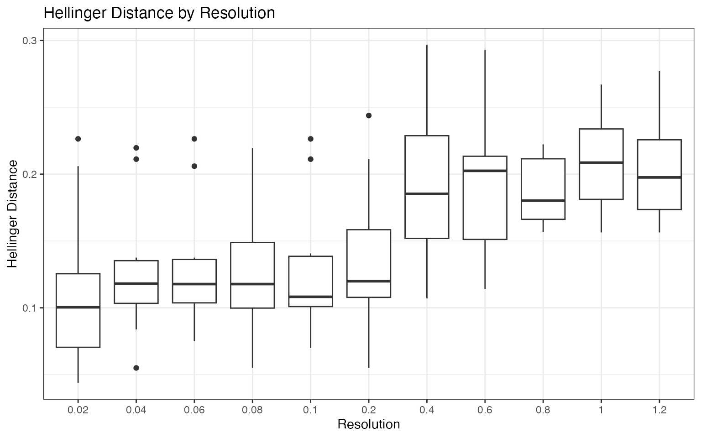
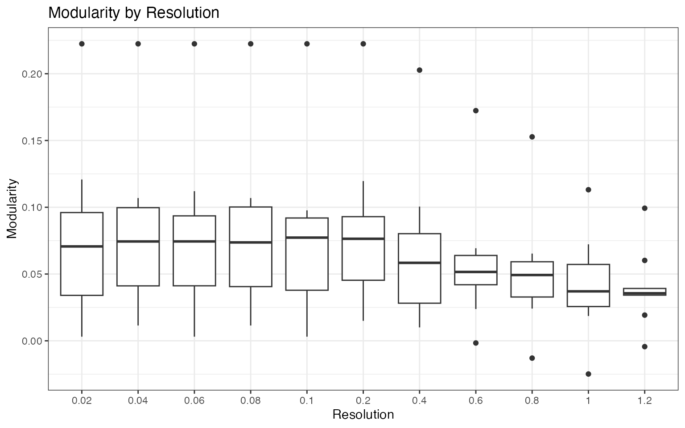

clustOpt: Quickstart Guide
Compiled: 2025-12-19
Source:vignettes/quick_start_guide.Rmd
quick_start_guide.Rmd
library(Seurat)
# Only v5 Seurat Assays are supported
options(Seurat.object.assay.version = "v5")
# Increase future globals limit for large datasets
options(future.globals.maxSize = 2e9) # 2GB limit
library(dplyr)
library(tidyr)
library(ggplot2)
library(clustOpt)
library(future)
set.seed(42)Read in the tutorial dataset. This data was generated from the Asian Immune Diversity Atlas (data freeze v1). It contains only B cells, Monocytes, and NK cells from 10 donors which have been sketched to a total of 1000 cells using the leverage score based method of Seurat’s SketchData function.
input <- readRDS(
system.file(
"extdata",
"1000_cell_sketch_10_donors_3_celltypes_AIDA.rds",
package = "clustOpt"
)
)
input@meta.data |>
summarize(
Donors = n_distinct(donor_id),
Celltypes = n_distinct(broad_cell_type),
`Cell Subtypes` = n_distinct(author_cell_type),
Ethnicities = n_distinct(Ethnicity_Selfreported),
Countries = n_distinct(Country)
) |>
pivot_longer(cols = everything(), names_to = "Metric", values_to = "Count")
#> # A tibble: 5 × 2
#> Metric Count
#> <chr> <int>
#> 1 Donors 10
#> 2 Celltypes 3
#> 3 Cell Subtypes 10
#> 4 Ethnicities 5
#> 5 Countries 3
input <- input |>
SCTransform(verbose = FALSE) |>
RunPCA(verbose = FALSE)
ElbowPlot(input, ndims = 50)
input <- RunUMAP(input, dims = 1:20, verbose = FALSE)
DimPlot(input,
group.by = "donor_id",
pt.size = .8
) +
coord_fixed()
DimPlot(input,
group.by = "broad_cell_type",
pt.size = .8
) +
coord_fixed()
DimPlot(input,
group.by = "author_cell_type",
pt.size = .8
) +
coord_fixed()
How clustOpt Works
clustOpt uses subject-wise leave-one-out cross-validation to find clustering resolutions that generalize across biological replicates:
- PC Splitting: Principal components are split into two independent sets (odd: PC1, PC3, PC5… and even: PC2, PC4, PC6…)
- Training: For each held-out subject, a Random Forest is trained on one PC set to predict cluster assignments
- Evaluation: Clustering quality metrics are calculated on the opposite PC set
This separation ensures that the evaluation is performed on data independent from what was used for training, preventing overfitting and providing a more honest assessment of clustering reproducibility.
Running clustOpt
Subject-wise cross validation is parallelized with
future and future.batchtools can be used for
HPC job schedulers. For details on which plan to use for your setup, see
the future package documentation. The code below requires a large amount
of RAM (32 GB recommended) and 10 cores to run in about 20 minutes. The
repeated messages about “SeuratObject” are a side effect of using the
future plan “multisession” and should not occur with other future
plans.
plan("multisession", workers = 10)
cv_results <- clust_opt(input,
subject_ids = "donor_id",
ndim = 20,
verbose = FALSE,
train_with = "even"
) |>
progressr::with_progress() # Optional, just adds progress bar
#> Input is small enough to run with all cells
#> Using 10 subject(s) that have at least 50 cells:
#> JP_RIK_H073 (100 cells)
#> JP_RIK_H131 (83 cells)
#> KR_SGI_H002 (76 cells)
#> KR_SGI_H136 (127 cells)
#> SG_HEL_H09a (52 cells)
#> SG_HEL_H077 (147 cells)
#> SG_HEL_H138 (130 cells)
#> SG_HEL_H153 (85 cells)
#> SG_HEL_H166 (123 cells)
#> SG_HEL_H319 (77 cells)
#> Found 110 combinations of test subject and resolution
#> Holdout subject: JP_RIK_H073
#> Found 2932 (97.73%) shared genes used for projecting test data
#> Holdout subject: JP_RIK_H131
#> Found 2923 (97.43%) shared genes used for projecting test data
#> Holdout subject: KR_SGI_H002
#> Found 2923 (97.43%) shared genes used for projecting test data
#> Holdout subject: KR_SGI_H136
#> Found 2942 (98.07%) shared genes used for projecting test data
#> Holdout subject: SG_HEL_H09a
#> Found 2820 (94.00%) shared genes used for projecting test data
#> Holdout subject: SG_HEL_H077
#> Found 2988 (99.60%) shared genes used for projecting test data
#> Holdout subject: SG_HEL_H138
#> Found 2956 (98.53%) shared genes used for projecting test data
#> Holdout subject: SG_HEL_H153
#> Found 2922 (97.40%) shared genes used for projecting test data
#> Holdout subject: SG_HEL_H166
#> Found 2956 (98.53%) shared genes used for projecting test data
#> Holdout subject: SG_HEL_H319
#> Found 2896 (96.53%) shared genes used for projecting test data
# Shut down stray workers
plan("sequential")Plotting the silhouette score distributions
plots <- create_sil_plots(cv_results |> drop_na())
plots[[1]]
plots[[2]]
plots[[3]]
plots[[4]]
The silhouette score distribution shows how consistently clusters are separated across subjects at each resolution. Key patterns to look for:
- Declining scores at higher resolutions indicate over-clustering, where cells are forced into clusters that don’t represent distinct populations
- Low variance across subjects (narrow boxes) indicates reproducible clustering
- Local maxima may indicate resolutions that capture natural biological structure
The optimal resolution typically shows high median silhouette scores
with low variance across subjects, suggesting that the clustering
captures cell populations that are consistently distinguishable
regardless of which subjects are used for training. Use
suggest_resolution() to identify the best resolution across
all metrics.
Additional Quality Metrics
The clust_opt() function calculates several metrics
beyond silhouette scores to help evaluate clustering quality. Let’s
examine the full output:
# Preview the data
head(cv_results)
#> resolution test_sample avg_width cluster_median_widths
#> 1 0.02 JP_RIK_H073 0.037940990 0.04041560
#> 2 0.04 JP_RIK_H073 0.030294964 0.04859213
#> 3 0.06 JP_RIK_H073 0.030294964 0.04859213
#> 4 0.08 JP_RIK_H073 0.004347761 -0.00268237
#> 5 0.10 JP_RIK_H073 0.032621864 0.03448975
#> 6 0.20 JP_RIK_H073 -0.013269883 0.02387077
#> n_predicted_clusters min_predicted_cell_per_cluster
#> 1 2 43
#> 2 3 4
#> 3 3 4
#> 4 3 3
#> 5 3 4
#> 6 4 6
#> max_predicted_cell_per_cluster mse mad KLdivergence Hellinger
#> 1 57 5.570832 5.747649 0.007760203 0.04396979
#> 2 53 5.220195 5.575228 0.090715865 0.13757951
#> 3 53 5.220195 5.575228 0.090715865 0.13757951
#> 4 52 5.396809 5.634626 0.120647213 0.15612518
#> 5 51 5.228294 5.570249 0.093955617 0.14069579
#> 6 61 5.175014 5.578473 0.063462049 0.11920861
#> modularity
#> 1 0.0612
#> 2 0.0756
#> 3 0.0756
#> 4 0.0672
#> 5 0.0813
#> 6 0.0858Understanding the Metrics
Each metric provides a different perspective on clustering quality:
avg_width: Average silhouette score across all test cells. Measures how well-separated clusters are (range: -1 to +1, higher is better).
cluster_median_widths: Median silhouette score per cluster, then averaged.
KLdivergence: Kullback-Leibler divergence D_KL(training || predicted). Measures how much the predicted cluster proportions in the test subject differ from the training data. Lower values indicate more reproducible clustering (0 = identical distributions).
Hellinger: Hellinger distance between training and predicted cluster proportions. Similar to KL divergence but symmetric and bounded (0 to 1). Lower is better.
modularity: Measures clustering quality using a k-nearest neighbor graph (k=20). Higher values indicate that cells cluster with their assigned neighbors rather than cells from other clusters (range: -0.5 to 1, higher is better).
Distribution Similarity (KL Divergence & Hellinger Distance)
These metrics assess whether cluster proportions are reproducible across subjects. When a subject is held out:
- The Random Forest predicts cluster assignments for the test subject
- The predicted cluster proportions are compared to the training cluster proportions
Lower values indicate that different subjects produce similar cluster compositions at that resolution. This is important because a reproducible resolution should identify the same underlying cell populations regardless of which subjects are used for training.
- KL Divergence is asymmetric and can approach infinity if a cluster is present in training but completely absent in predictions
- Hellinger Distance is symmetric and bounded (0-1), providing a more stable comparison
Both metrics use a pseudocount of 1 to handle clusters that may be missing in predictions.
cv_results |>
drop_na() |>
ggplot(aes(x = as.factor(resolution), y = KLdivergence)) +
geom_boxplot() +
theme_bw() +
labs(
title = "KL Divergence by Resolution",
x = "Resolution",
y = "KL Divergence"
)
cv_results |>
drop_na() |>
ggplot(aes(x = as.factor(resolution), y = Hellinger)) +
geom_boxplot() +
theme_bw() +
labs(
title = "Hellinger Distance by Resolution",
x = "Resolution",
y = "Hellinger Distance"
)
Graph-Based Clustering Quality (Modularity)
Modularity measures whether the predicted cluster assignments partition the data’s neighborhood graph better than expected by chance:
- A k-nearest neighbor graph (k=20) is constructed from the test data projected onto the clustering PCs
- Modularity compares the fraction of edges within clusters to what would be expected if edges were distributed randomly (while preserving node degrees)
Modularity complements silhouette scores by capturing local connectivity patterns rather than global distances.
cv_results |>
drop_na() |>
ggplot(aes(x = as.factor(resolution), y = modularity)) +
geom_boxplot() +
theme_bw() +
labs(
title = "Modularity by Resolution",
x = "Resolution",
y = "Modularity"
)
Interpreting Multiple Metrics
When selecting an optimal resolution, consider these guidelines:
Silhouette scores: Look for resolutions where scores are high and stable across subjects. Declining silhouette at higher resolutions often indicates over-clustering.
KL Divergence / Hellinger: Lower values indicate reproducible cluster proportions across subjects. Increasing values at higher resolutions suggest that the clustering becomes subject-specific rather than capturing shared biology.
Modularity: Higher values indicate predicted clusters that match the local neighborhood structure of the test data. Decreasing modularity at higher resolutions suggests clusters are becoming subject-specific and don’t generalize well.
We encourage you to look at the plots for all of the metrics before
picking a resolution. The suggest_resolution() function
uses a rank aggregation approach to help pick a resolution that performs
well across all metrics when they conflict:
# Get resolution rankings across all metrics
rankings <- suggest_resolution(cv_results)
rankings
#> # A tibble: 11 × 10
#> resolution median_sil median_kl median_hellinger median_modularity rank_sil
#> <dbl> <dbl> <dbl> <dbl> <dbl> <dbl>
#> 1 0.1 0.0169 0.0501 0.108 0.0773 4
#> 2 0.02 0.0166 0.0456 0.100 0.0707 5
#> 3 0.06 0.0188 0.0634 0.118 0.0744 2
#> 4 0.04 0.0215 0.0633 0.118 0.0744 1
#> 5 0.08 0.0188 0.0594 0.118 0.0737 3
#> 6 0.2 0.00226 0.0657 0.120 0.0764 6
#> 7 0.4 -0.0663 0.167 0.185 0.0584 7
#> 8 0.8 -0.0988 0.145 0.180 0.0493 9
#> 9 0.6 -0.0781 0.189 0.202 0.0516 8
#> 10 1.2 -0.133 0.181 0.198 0.0356 10
#> 11 1 -0.152 0.200 0.209 0.0370 11
#> # ℹ 4 more variables: rank_kl <dbl>, rank_hellinger <dbl>,
#> # rank_modularity <dbl>, mean_rank <dbl>
# Visualize individual metric ranks with mean rank overlay
plot_rank_metrics(rankings)
# Visualize mean rank only
plot_mean_rank(rankings)
Comparison to the cell annotations
input <- FindNeighbors(input, dims = 1:20, verbose = FALSE)
input <- FindClusters(input, resolution = 0.1)
#> Modularity Optimizer version 1.3.0 by Ludo Waltman and Nees Jan van Eck
#>
#> Number of nodes: 1000
#> Number of edges: 31348
#>
#> Running Louvain algorithm...
#> Maximum modularity in 10 random starts: 0.9636
#> Number of communities: 3
#> Elapsed time: 0 seconds
DimPlot(input,
group.by = "seurat_clusters",
pt.size = .8
)
We can see that at the reproducible resolution there are 3 clusters, cooresponding to each celltype in the example dataset.
For convenience we provide a function to calculate the adjusted rand index for any 2 metadata columns in a seurat object so that the clustOpt resolution parameter can be compared to clusters derived from other methods.
adjusted_rand_index(input,
meta1 = "seurat_clusters",
meta2 = "broad_cell_type"
)
#> [1] 1
adjusted_rand_index(input,
meta1 = "seurat_clusters",
meta2 = "author_cell_type"
)
#> [1] 0.8056774Larger Datasets
Due to the resource requirements of clustOpt, we recommend running it
in Rscripts with the future plan set to “multicore” instead
of “multisession” and if possible using future.batchtools.
Additionally we provide a wrapper around Seurat’s
SketchData using the leverage score method to reduce the size of the
input data to clustOpt.
input <- leverage_sketch(input, sketch_size = 100)
#> Sketching scRNA data: 1000 -> 100 cells
#>
#> Removing previously calculated leverage scores...
#> Normalizing scRNA-seq data...
#> Finding variable features for scRNA-seq data...
#> Using 2000 variable features for sketching
#> Calcuating Leverage Score
#> Renaming default assay from sketch to RNA
input
#> An object of class Seurat
#> 13855 features across 100 samples within 1 assay
#> Active assay: RNA (13855 features, 2000 variable features)
#> 3 layers present: counts, data, scale.data